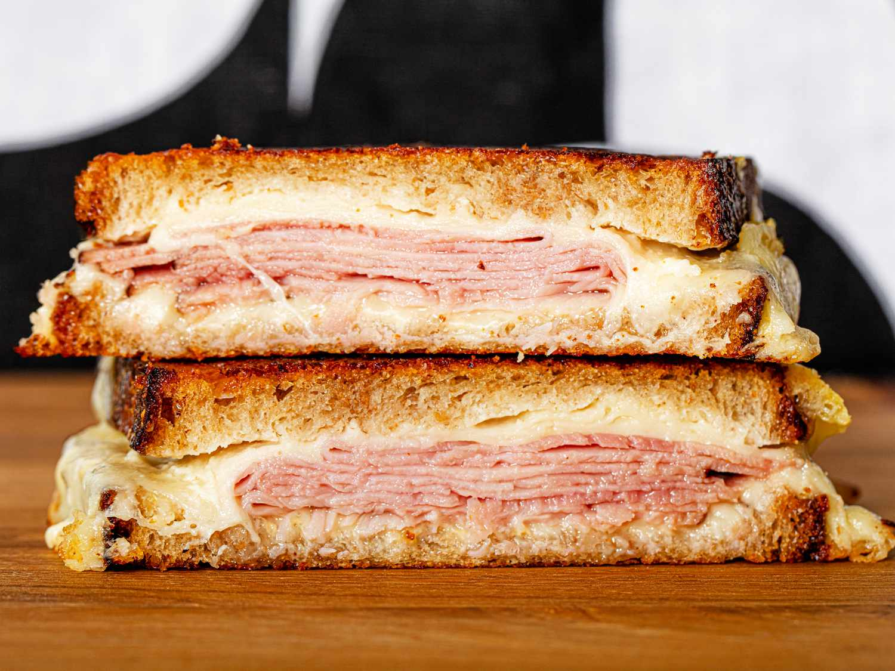

Turkey Sandwich

Description
A ham and cheese sandwich is a classic and satisfying choice. It features slices of ham and cheese between bread, often with additional toppings like lettuce, tomato, or condiments for extra flavor.
Ingredients
- Bread (white, wheat, or your favorite)
- Ham
- Cheese (Swiss, cheddar, or your preference)
- Butter or mayonnaise (optional)
- Mustard (optional)
- Lettuce, tomato, or other desired toppings (optional)
Steps
- Gather your ingredients: Make sure you have everything you need within reach.
- Prepare the bread: Lay out two slices of bread on a plate or cutting board.
- Add condiments (optional): If desired, spread butter, mayonnaise, or mustard on one or both slices of bread.
- Layer the fillings: Place slices of cheese and ham on one slice of bread.
- Add toppings (optional): If you like, add lettuce, tomato, or other desired toppings.
- Combine the sandwich: Place the other slice of bread on top of the fillings.
- Cut and serve: Cut the sandwich in half diagonally for a classic look.